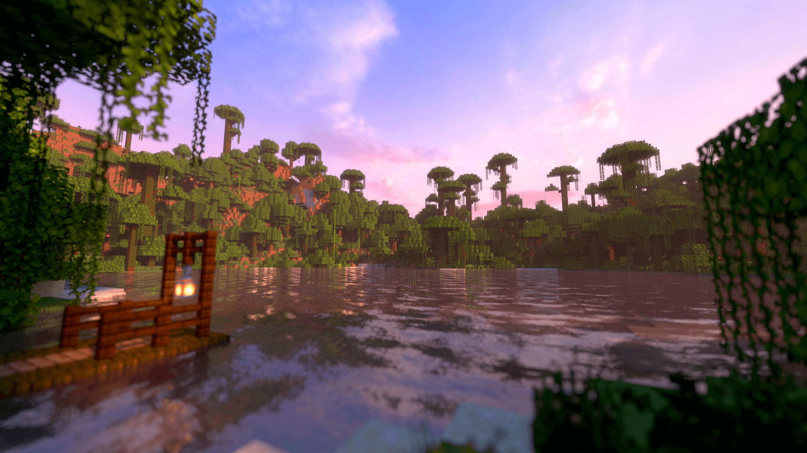
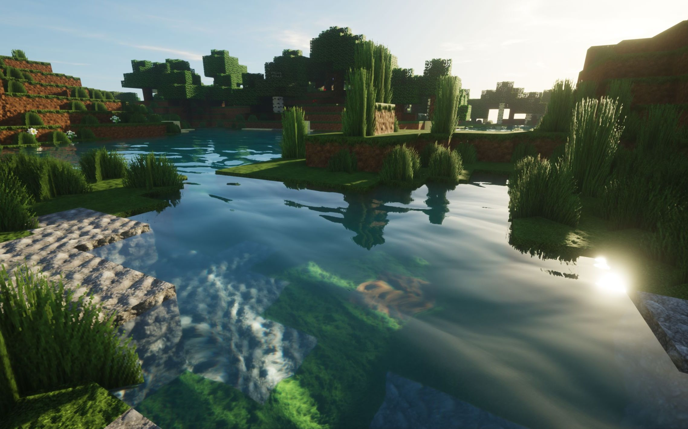

用到的技术
.NET 8 WPF
XAML 原生控件
本地 JSON 数据
整包自更新
微软设备码登录
陶瓦联机

设置 · 内存与下载源界面还原稿
INTERFACE
界面不是网页，
是 XAML 窗口
窗口、侧栏、列表、弹窗都由 WPF 直接绘制。没有白屏，没有加载骨架，右键菜单、输入法、拖拽文件全部交给系统处理。
- 无边框窗口自绘标题栏，拖动、缩放、最大化按系统行为走，不靠自绘模拟。
- 可折叠侧栏收起后只留 64px 图标，页面切换是内存里的路由历史，后退前进可用。
- 六色内存滑条拖动即时生效，分配值直接写进实例配置，不需要重启客户端。

下载中心 · 队列与清单界面还原稿
DOWNLOAD
一条队列，
装完整个环境
版本、模组、整合包、资源包、光影、Java 运行时统一排队，两路并发。任务落在本地文件，重启后进度还在。
- 可暂停的下载暂停、继续、取消、清除都可用，单任务显示速度与剩余时间。
- 官方源与镜像源下载源可切换，国内网络不必硬扛官方地址。
- 整合包直连 Modrinth不用手动找链接，选完直接进队列。

多人联机 · 组件与端口界面还原稿
MULTIPLAYER
开房间，
不用另开软件
陶瓦联机组件的下载、校验、启动都在启动器里完成。房间创建后自动探测端口，冲突时明确提示，不静默失败。
- 组件自动就位下载与校验一体，缺文件会重新拉取，不用去网盘找。
- 端口占用可查启动前探测 25565 等常用端口，被占用会给出具体原因。
- 三种账户离线 UUID、微软设备码、外置皮肤站在同一个账户窗口里切换。

启动之后，
直接进世界
版本隔离、Forge / Fabric / NeoForge / Quilt 安装、Java 选择都在客户端内完成。加载器安装后回填真实版本号，失败有错误码可查，不必猜是哪一步坏了。
FAQ
解答你的顾虑
关于安装、升级、数据安全和加载器支持的常见问题。
启动器需要联网吗？+
下载游戏、模组、加载器需要联网；已经装好的实例可以离线启动。启动时会上报一次版本、构建号、系统与运行时长，用于判断是否需要更新，不带账号名与文件路径。
更新会不会覆盖存档和账号？+
不会。更新只覆盖程序文件，data/（账号、实例、存档、下载队列、设备标识）原地保留。替换使用只覆盖不删除的方式，不清理未知文件。
为什么包比旧版小了很多？+
旧版把整套网页资源与 WebView2 一起打包，接近 200 MB。移除网页层后只剩程序、运行时与字体图标，自包含包约 79 MB。
支持哪些加载器？+
Forge、Fabric、NeoForge、Quilt 与官方版本。安装失败会给出错误码，可在实例详情里重试，不必重新建实例。
更新是强制的吗？+
不是。命中灰度才提示，玩家可以稍后再说；真正需要强制升级时会另做阻塞式提示，这一轮只做提示，不拦启动。